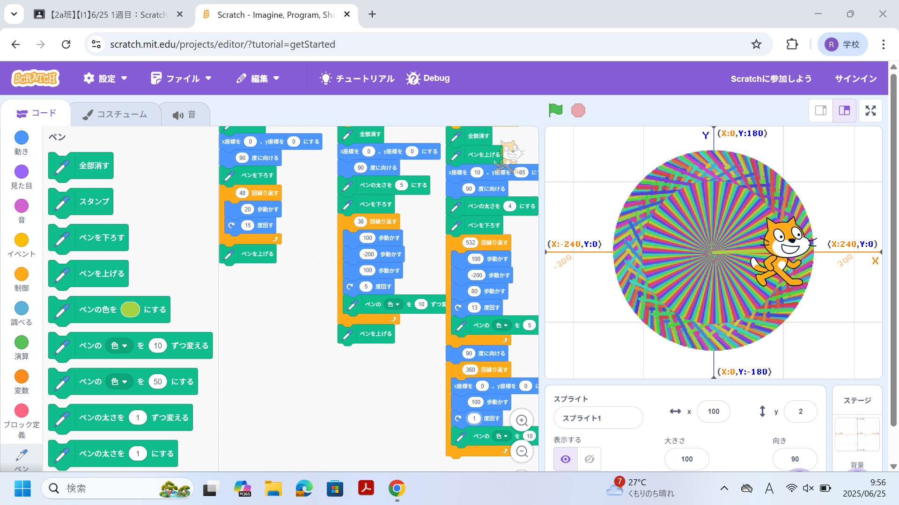
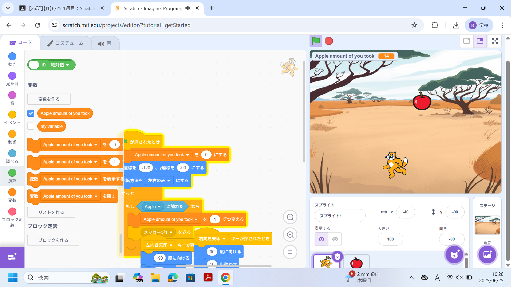

1週目のレポート ： 公大高専１年実習I-1
2a班12番 やーま
第1週目
1-1 サイエンスアート

1.内容
Scratchを用いて幾何学的な模様を作るという授業だった。
ここでは、様々なコマンドの意味を有するブロックを使い、模様を作った。
2.感想
最初コマンドの要素を見たときとても難しそうに感じたが、割と操作と仕様を覚えることによって
自分にとって納得の行く模様を作り出すことができた。
1-2 ゲーム

1.内容
scratchを用いて、リンゴを集めるという簡易的なゲームを作った。
様々なコードを用いて、規則性のあるものや乱数の要素を追加した。
2.感想
scratchでは、簡単にゲームを作ることができ、また、制作の自由度も高いという事を学んだ。
今度は左右方向だけでなく、上下にも追加してより自由度の高いものを作りたい。
1-3 ホームページ作成
私のホームページ
1.内容
元々用意されていたhtmlコードの内容を変えて、オリジナルのホームページを作った。
それと同時に、レポートや、操作方法を学んだ。
2.感想
元々用意されていたhtmlコードの内容を変えるのは簡単だが、
自らコードを書き、ホームページを完成させるのは非常に難しそうだなと感じた。
各ページへのリンク
1週目のレポート
2週目のレポート
3週目のレポート
私のホームページ